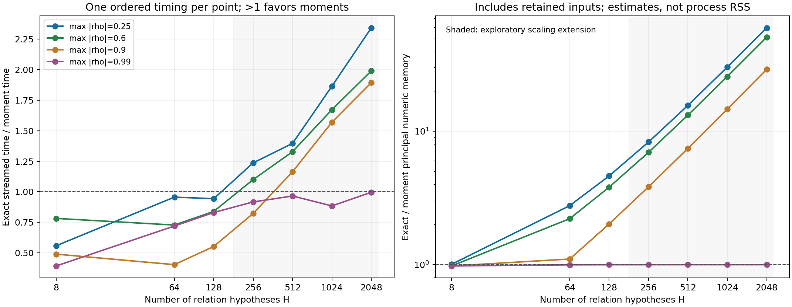

本轮沿顶会目标推进，得到一个可解释、带数学截断界的计算原语。它保留完整关系后验和观测分支，用少量相关矩近似后续补齐的信息价值。当前完成的是数学与合成计算证据；尚未在新材料数据上拟合、生成或评分，不能称已达到材料强基线或顶会投稿标准。
易懂算法解释与最初目标的对应 · 完整模型与推导 · 矩编码程序说明 · 28点完整结果
不是给旧固定Gaussian关系再加权。假设有H种仍可能成立的性质依赖，真实共测通过似然更新其后验。旧单位的关系观察A，能影响新候选proxy B对缺失目标的预测价值。我们检验怎样保留这项未来信息，避免每次构造H×H的条件CDF核。
自催化、Bayes规划、CRPS信息价值、Taylor特征都已有先例。候选贡献是材料身份一致的共测任务、保留分支的低维价值表示、误差与失败边界，以及实证成立的空间／计算权衡。有限检索没有找到完全同题，但不保证全网唯一。见直接近邻与矩表示近邻。
m_n(w,b) = sum_h w_h rho_(b,h)^n a_n = choose(2n,n) / [4^n(2n−1)] g_D(w,b) = sigma_b/sqrt(pi) * sum_(n=1..D) a_n m_n(w,b)^2 0 ≤ g−g_D ≤ sigma_b/sqrt(pi) * choose(2D,D)/4^D * r_b^(2D+2)
这是指定Gaussian-copula模型内的信息价值编码，不是完整材料分布或原始矩阵已被压成D维。各候选需要自己的矩；完整H权重继续保留以便未来Bayes更新。每个第一次观察结果的概率与后验都保留，先对第二动作取max，再对第一次结果平均。
独立的有限联合表、CDF积分、Fraction／整数平方根区间审计已通过。关键反例同时保留：同一个后验协方差摘要可以产生不同自适应收益；D=1可以把真正更好的候选排在后面；相关接近1时低阶近似不足。数学截断界不包含浮点、模型失配或真实测量误差，不是IEEE机器严格区间。
第一组12个预登记中小规模点全部比优化流式精确参考更慢。随后另行登记16个大H点，保持原源码、epsilon=10⁻⁶、Dcap=64、所有4个相关上限和全部结果；它是后验探索性计算扩展，不是独立材料确认。扩展中11/16点比流式参考快，接近1时回退并无稳定速度优势。
代表点H=2048、r=0.6：共同输入准备＋分数读出为2.349→1.181秒；算法主数组估计为33,818,624→153,160字节。加上两者仍保留的共同输入后，主数值数组估计比约50.7。这些不是完整RSS、端到端智能体延迟或真实实验节约。
28点的所选受限R-first策略，相对精确同家族参考的保存浮点价值regret均为0。它不代表任意输入／完整POMDP／真实材料上零误差；预定值误差允许10⁻⁶截断加单列数值容差。一次有序计时不构成普遍加速排名。
独立保存数值核算覆盖原12点：36个全核位置、所有3072项保存包络、1792个非回退moment重建及12个实际策略。16点扩展另做了逐例字节／来源／结果绑定的只读核查，并复用相同未改源码；不能称全部28点都做过另一套全核独立重算。

| 阶段 | H | r | D | 流式时间/矩时间 | 主数组总量比 | 策略regret |
|---|---|---|---|---|---|---|
| 原12 | 8 | 0.25 | 3–3 | 0.559 | 1.01 | 0 |
| 原12 | 8 | 0.6 | 精确回退 | 0.783 | 0.98 | 0 |
| 原12 | 8 | 0.9 | 精确回退 | 0.491 | 0.98 | 0 |
| 原12 | 8 | 0.99 | 精确回退 | 0.394 | 0.98 | 0 |
| 原12 | 64 | 0.25 | 3–3 | 0.956 | 2.77 | 0 |
| 原12 | 64 | 0.6 | 8–9 | 0.728 | 2.21 | 0 |
| 原12 | 64 | 0.9 | 38–39 | 0.405 | 1.10 | 0 |
| 原12 | 64 | 0.99 | 精确回退 | 0.720 | 1.00 | 0 |
| 原12 | 128 | 0.25 | 3–3 | 0.944 | 4.63 | 0 |
| 原12 | 128 | 0.6 | 8–9 | 0.840 | 3.81 | 0 |
| 原12 | 128 | 0.9 | 38–39 | 0.553 | 2.02 | 0 |
| 原12 | 128 | 0.99 | 精确回退 | 0.831 | 1.00 | 0 |
| 扩展16 | 256 | 0.25 | 3–3 | 1.237 | 8.30 | 0 |
| 扩展16 | 256 | 0.6 | 8–9 | 1.100 | 6.95 | 0 |
| 扩展16 | 256 | 0.9 | 38–39 | 0.823 | 3.83 | 0 |
| 扩展16 | 256 | 0.99 | 精确回退 | 0.917 | 1.00 | 0 |
| 扩展16 | 512 | 0.25 | 3–3 | 1.396 | 15.62 | 0 |
| 扩展16 | 512 | 0.6 | 8–9 | 1.328 | 13.20 | 0 |
| 扩展16 | 512 | 0.9 | 38–39 | 1.164 | 7.44 | 0 |
| 扩展16 | 512 | 0.99 | 精确回退 | 0.966 | 1.00 | 0 |
| 扩展16 | 1024 | 0.25 | 3–3 | 1.864 | 30.26 | 0 |
| 扩展16 | 1024 | 0.6 | 8–9 | 1.672 | 25.70 | 0 |
| 扩展16 | 1024 | 0.9 | 38–39 | 1.569 | 14.66 | 0 |
| 扩展16 | 1024 | 0.99 | 精确回退 | 0.885 | 1.00 | 0 |
| 扩展16 | 2048 | 0.25 | 3–3 | 2.341 | 59.52 | 0 |
| 扩展16 | 2048 | 0.6 | 8–9 | 1.989 | 50.68 | 0 |
| 扩展16 | 2048 | 0.9 | 38–39 | 1.893 | 29.08 | 0 |
| 扩展16 | 2048 | 0.99 | 精确回退 | 0.997 | 1.00 | 0 |
此前6个经典缓存计时案例中，240个首动作都没有严格adaptive相对best-fixed收益；13处proxy索引变化只是等值。它们没有被改写，见独立解释。新12点是不同的已声明合成统计族，不是对旧案例的独立确认。
对称±10⁻⁸相关的分布形状价值约7.052×10⁻³⁴；直接二次型浮点读出为0，D2正项表示与稳定H2强参考均保留正值。但最终值超出浮点范围仍须拒绝；旧原型的广义极端数值边界没有被冒充已修复。同rho可分离时简单解析排序就是强解，不能用慢循环制造创新。
当前只研究纯关系观察后接一个proxy的子家族；B的整个边际必须与关系假设无关，旧／新单位给定关系后独立。混合panel、共享样品残差、直接取得当前目标、E先R后和后续付费V要进入完整联合规划。纯B本身不会学习关系，尚未实现完整生成—验证—自迭代智能体。
元数据上仍有JARVIS8802个未消费身份组；它们是同一DFT表内的新组，不能称外部湿实验。UCSB仅余22个来源组。下一步先按材料执行门草案落实原始字段、共测身份、Gaussian边际／双proxy星形假设、真实动作／情景成本，再登记新组和源码。强参考必须拥有同后验、同动作、V／STOP／不同查询顺序和相同预算。
这轮不需要作者现在补湿实验，也不能说只差湿实验就可投稿：实际材料有效性和任务适配仍须研究。MLST原稿、原模型与全部已有材料结果独立封存，不混入本轮结论。
root实际阅读 · 主近邻选读 · 矩编码近邻 · CDF／联合表审计 · 有理区间审计
基础出处包括Kar–Karnick 2012、化学空间CRPS序贯设计、p-KGFN。只声称账本中实际选读范围，没有声称各100篇全文读完。